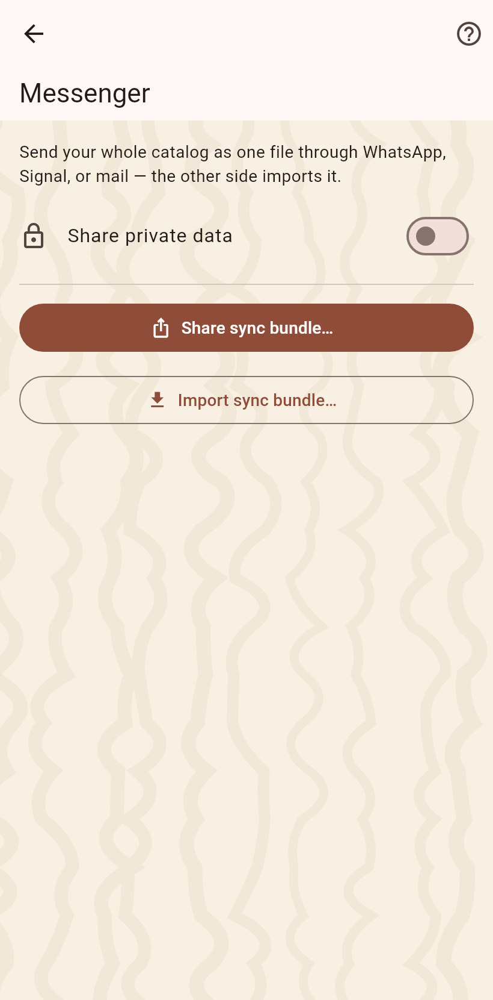

1. The bundle
From the sync page: write the bundle, with or without private values, and hand it to the messenger through the share sheet. The partner opens the file and imports it into the catalog of their choice.

A file with everything a device knows, through any messenger.
From the sync page: write the bundle, with or without private values, and hand it to the messenger through the share sheet. The partner opens the file and imports it into the catalog of their choice.
